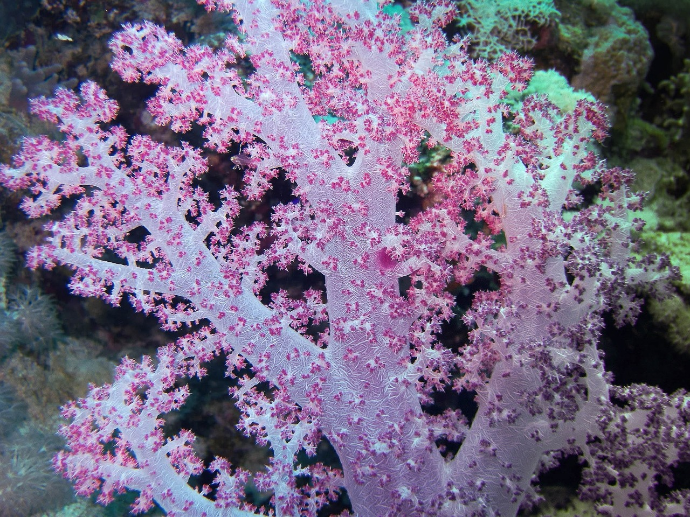
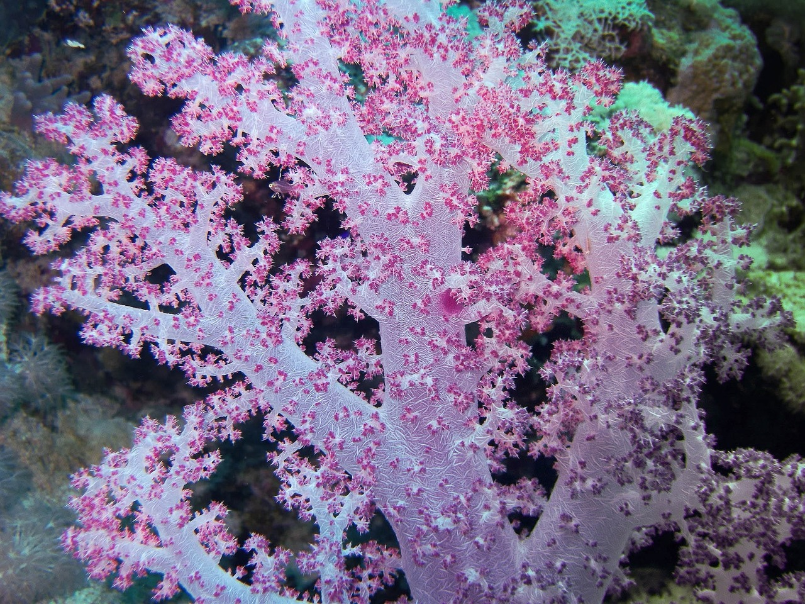
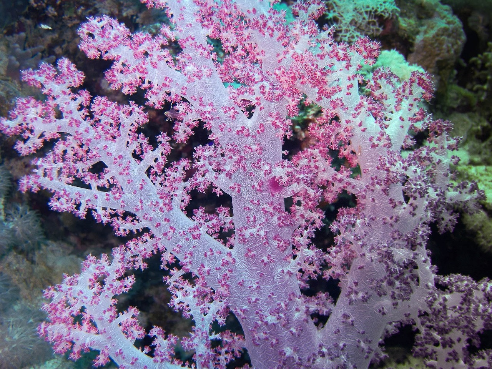
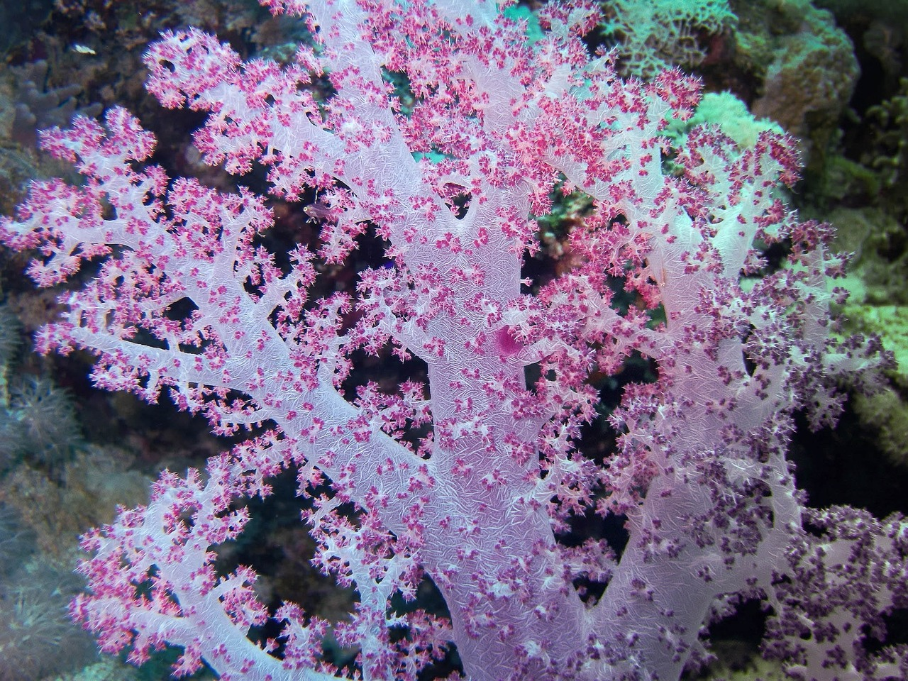

Ce site du patrimoine mondial pourrait être un rêve devenu réalité, passionnant et romantique, entrez dans son désert et découvrez les vérités de ce lieu étonnant et énigmatique, avec sa nature prodigieuse, ses récifs coralliens, sa faune, son peuple généreux, sa culture et ses traditions, il vaudrait bien la peine d’être une excellente destination de voyage, il ne manquera pas un Égyptien qui voudra vous convaincre de sa lignée pharaonique.
Mars, 11, 2022
Cette terre enchantée d’une culture infinie et de coutumes marquées par la proximité du Caire, attire des milliers de touristes tout au long de l’année, ceci grâce au charme qui s’éveille pour connaître la terre des pharaons, ses pyramides, ses sphinx, ses temples et ses lieux millénaires qui tout au long de l’histoire ont en quelque sorte marqué le destin de l’humanité. En appréciant leur voyage et en comprenant leur création, vous vous ferez connaître : La pyramide de Khéops ou Jufu, la plus grande des pyramides, le temple funéraire de Képhren, la pyramide de Mycerinus et la pyramide des Reines.
Mohamed Rassoul CISSE
.jpg)
Mars, 11, 2022
Cette ville touristique et historique de 100 portes, pour son grand nombre de temples, a été construite sur l’ancienne Thèbes, ainsi nommée par Homère lorsqu’il a écrit l’Iliade, située au sud du Caire dans la vallée du Nil, au climat très chaud et sec. Dans ce musée en plein air, tel qu’il est habituellement catalogué, vous pourrez visiter Le Temple de Louxor, le Temple de Karnak, la Vallée des Rois et la Vallée des Reines, les Colosses de Memnon, sont d’énormes statues égyptiennes en grès, et le Musée de Louxor situé au centre de la ville.
Mohamed Rassoul CISSE
.jpg)
Mars, 11, 2022
Propriétaire d’une vue magnifique par ses formations rocheuses et ses îlots, est une région commerciale et moderne d’une attraction exotique particulière, connue pour ses proies et être le point de départ pour visiter le célèbre temple d’Abou Simbel, est situé dans la partie orientale du Nil, est la ville la plus méridionale en Egypte et l’une des destinations les plus intéressantes pour le tourisme. Parmi ses monuments les plus remarquables, vous devriez visiter : l’obélisque inachevé d’Assouan, considéré comme un site archéologique, le musée de Nubie, Eléphantine, un temple ancien, et le temple de Kom Ombo.
Mohamed Rassoul CISSE